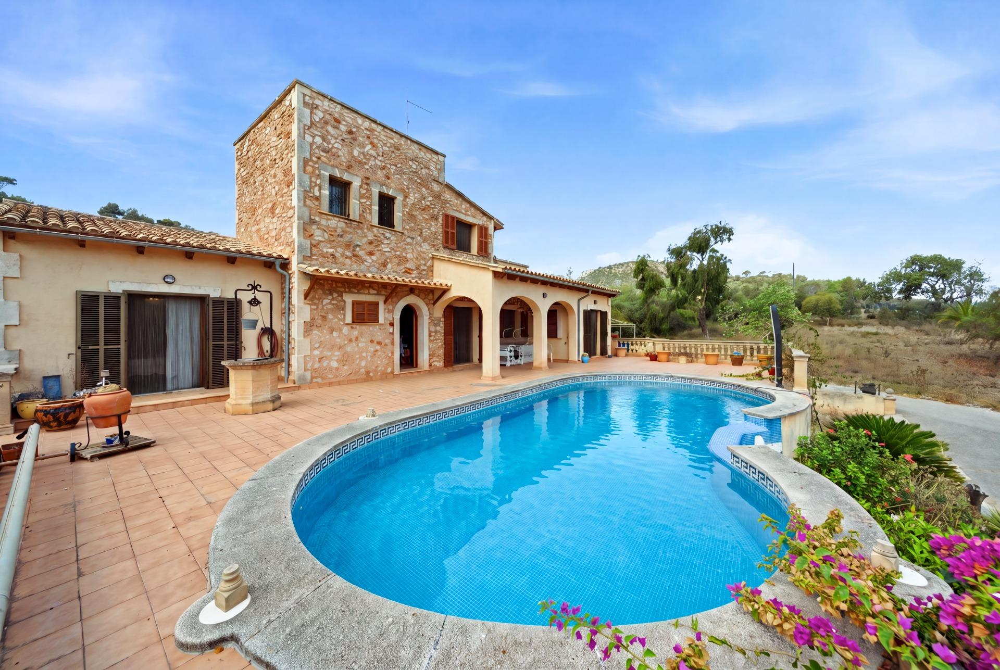

€899.000
Alqueria Blanca, Santanyí, Mallorca
Open the listingPreferred south-east pocket: central honey exposed-stone façade with dark timber shutters, arched loggia, terracotta terrace, and a finished private pool with Greek-key mosaic — plus a classic stone well that sells the old-mixed-with-new cozy character. Two independent dwellings (main + lower 3-bed apartment) on a huge private 18,242 m² plot minutes from Santanyí and the south-east beaches. €899k punches above typical Santanyí stone-with-pool stock that often sits near or over €1M.
Opened 8 Sep 2026. Gestpropiedad ref 05lflc042; price 899.000€; ACTIVE listing. Overview: casa de campo, 5 habitaciones, 5 baños, 434 m² built, 18,242 m² plot, year 2001. Features include piscina, chimenea, terraza, terraza acristalada, barbacoa, depósito agua. Agency copy: Alqueria Blanca / Santanyí; main dwelling 2 beds + suite bath + second bath + glazed terrace + porch to private pool; lower independent apartment 3 beds + bath + kitchen-diner. Photos (apinmo 29810050) confirm exposed-stone central wing + plaster wings with stone quoins + finished private pool + stone well. Distinct from board mondrago-courtyard (04dl018) and santanyi-salt (W-02X9XE). Not on prior board.